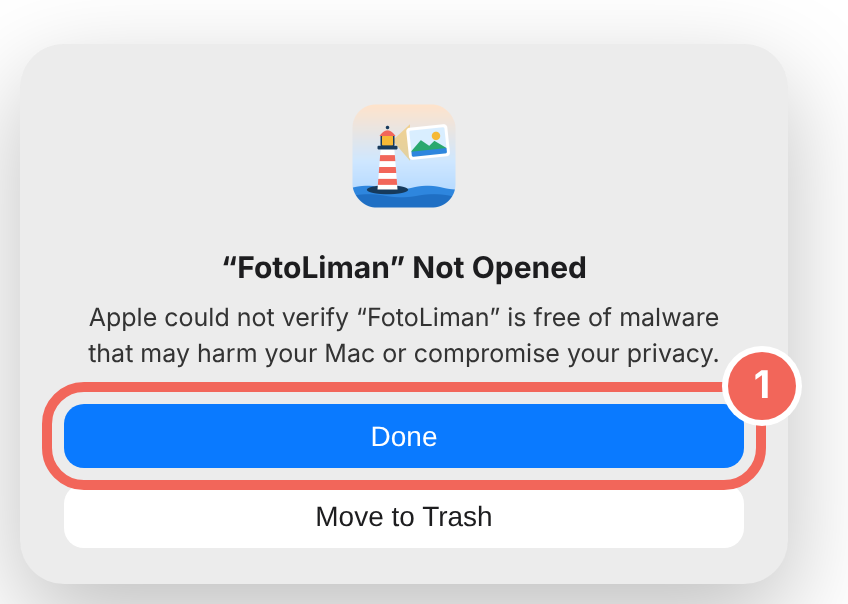
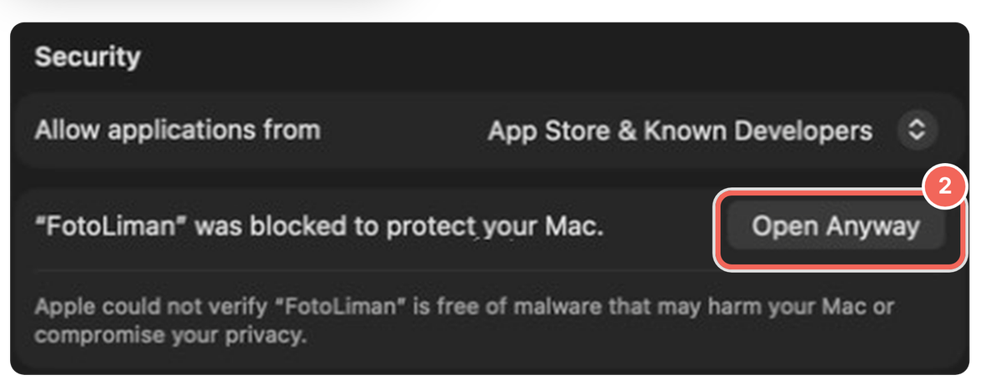
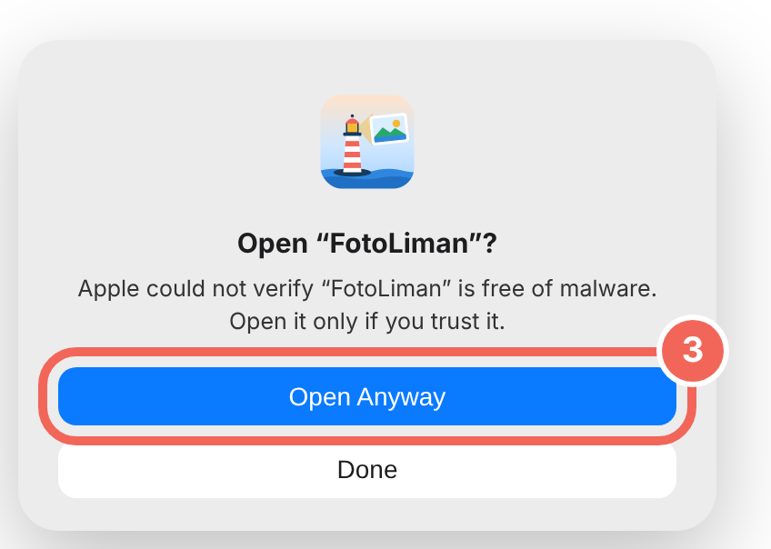
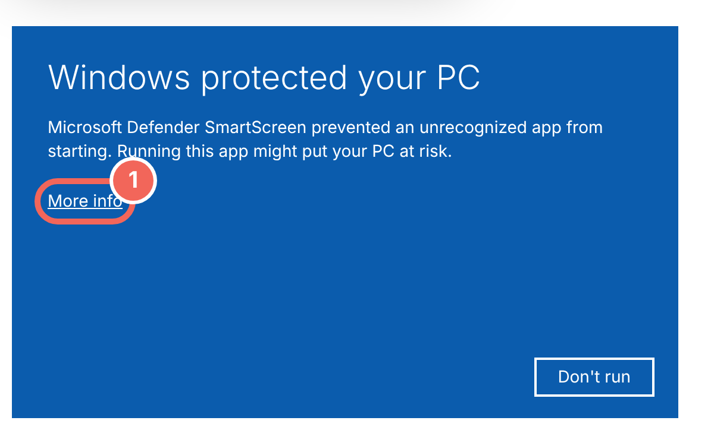
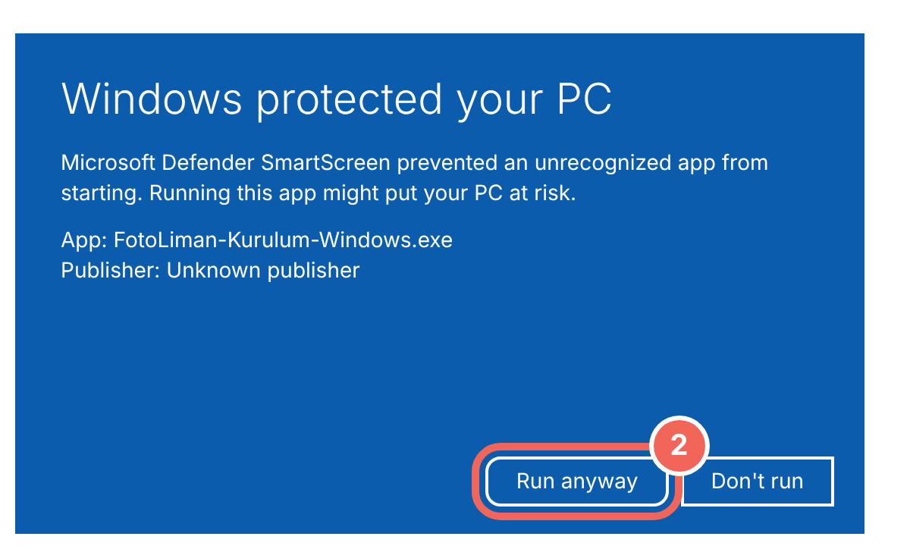
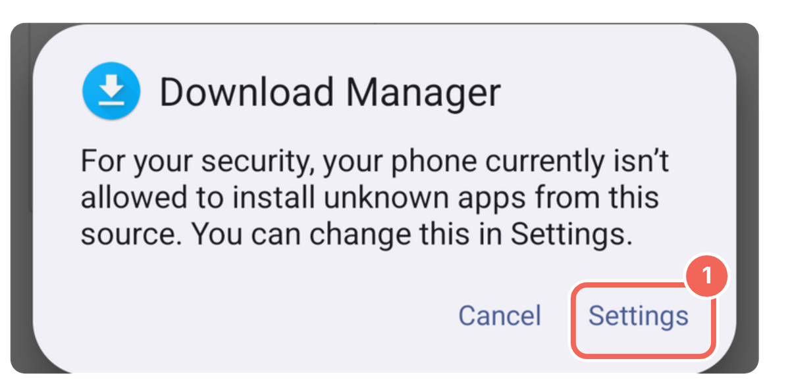
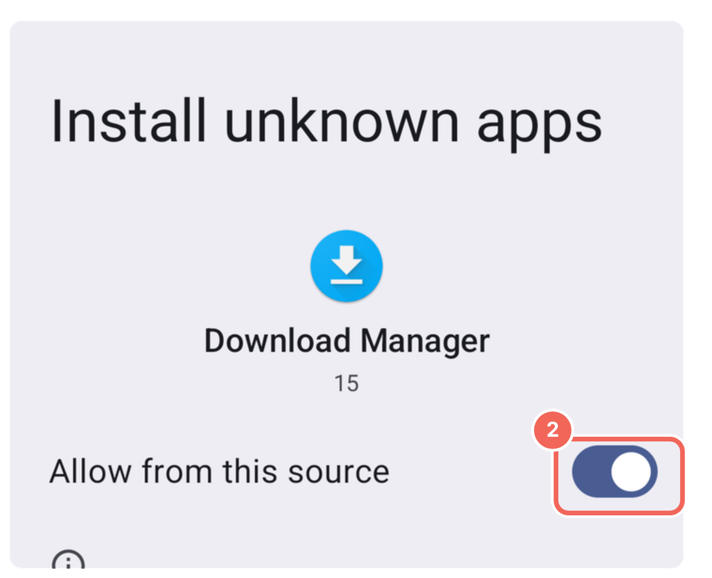
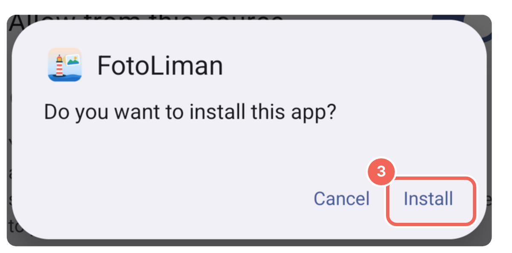

FotoLiman is not part of Apple's paid developer programme, so your Mac warns you once when you first open it. These steps take a minute and you won't be asked again.
Open the downloaded file and drag FotoLiman into the Applications folder. Then double-click FotoLiman.
A “FotoLiman” Not Opened message appears. Click Done.

Open System Settings › Privacy & Security, scroll to the bottom and click Open Anyway next to FotoLiman.

If it asks again, click Open Anyway once more and enter your Mac password or use Touch ID.

Requires a Mac with Apple silicon (M1 or later) and macOS 14 or later.
Installing on Windows
FotoLiman does not carry a paid digital signature, so Windows warns you once the first time you run it.
Double-click the downloaded file.(You can also open it from your browser's downloads list.)
If the blue “Windows protected your PC” screen appears, click More info, then Run anyway.


Click Install (it says Update if an older version is installed). FotoLiman then appears on your desktop and in the Start menu.
For Wi‑Fi transfers from your phone: when you first open FotoLiman Link, if the firewall asks, tick Private networks and allow it.
Installing on Android
FotoLiman Mobile is not on Google Play; it installs from the file. Your phone asks for permission the first time.
When the download finishes, tap the file. If the phone warns about unknown apps, tap Settings.

Turn on Allow from this source, then go back.

Tap Install. If a Play Protect warning appears, tap More details › Install anyway.

Android 8 or later. When a new version comes out, download it from the same button and install it over the old one; your settings are kept.
iPhone
Apps can't be installed on an iPhone from a file; Apple doesn't allow it. To back up your iPhone's photos, connect the iPhone to a Mac or Windows PC with a cable and choose it under Camera / SD card in FotoLiman on the computer. The computer download is above.
Connecting to Google Photos
FotoLiman is a personal app, so Google shows an “unverified” screen once. FotoLiman only reads the photos you pick and cannot delete anything.
Click Advanced, then Go to fotoliman (unsafe), and allow access.